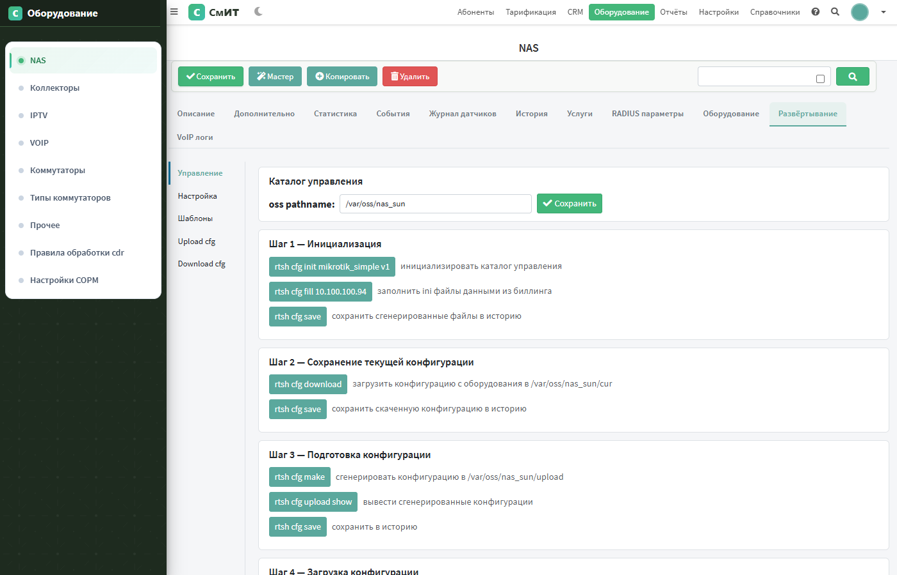
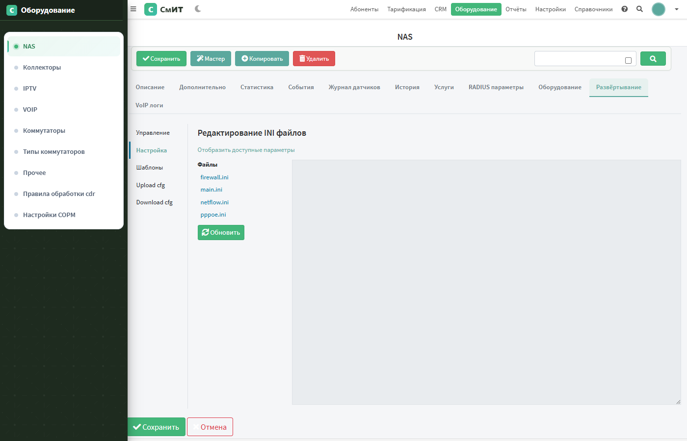
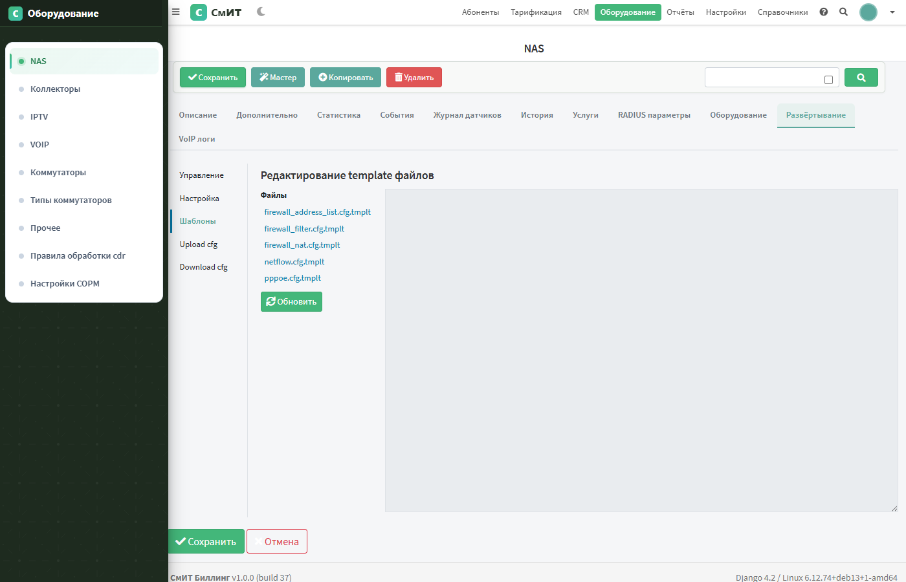
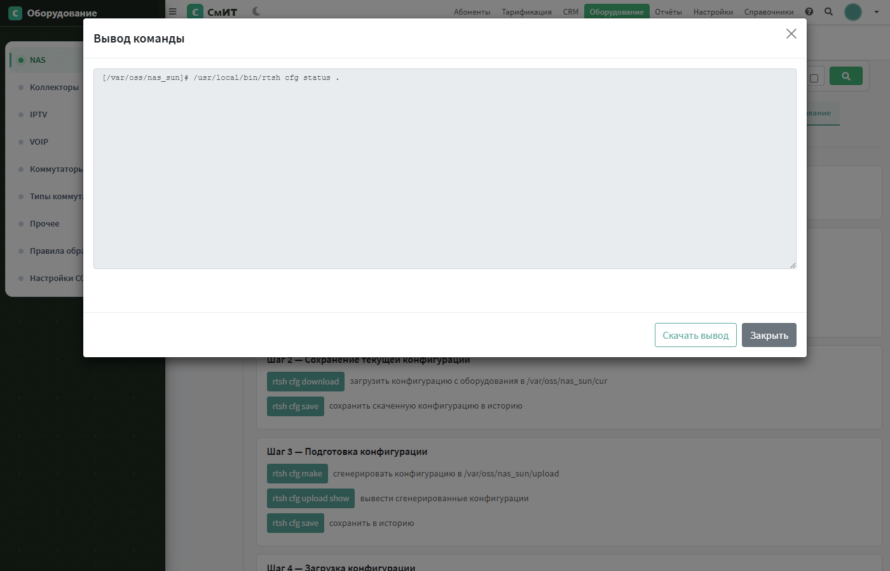
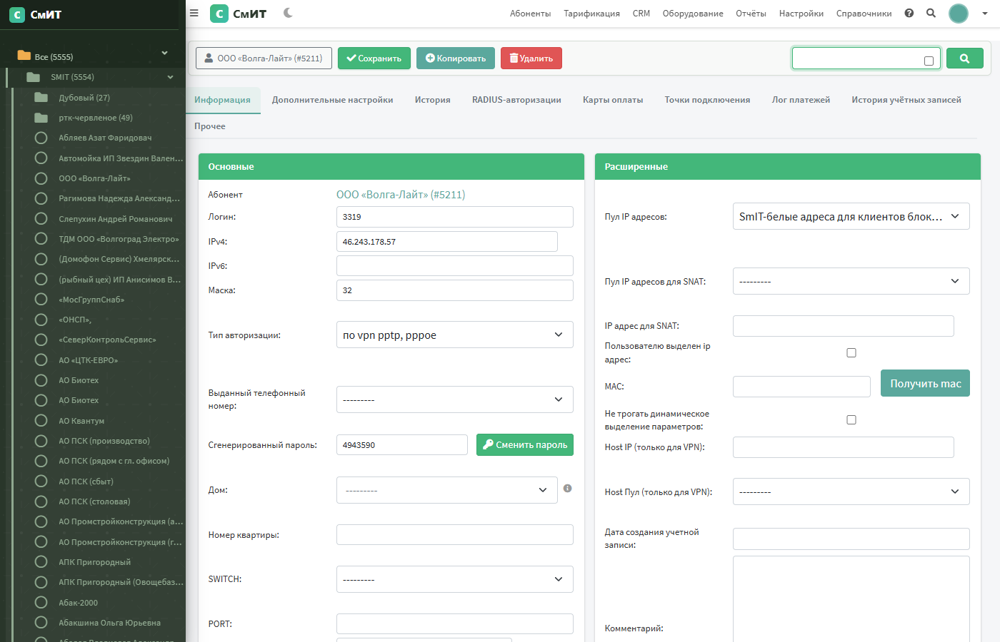

Журнал изменений
v1.0.0 (build 37) — 29 марта 2026
Отчёт по задачам: 25 задач из Telegram-чата
Детальный лог сессии: session_29mart.html
NAS Развёртывание (OSS)
Вкладка «Развёртывание» в карточке NAS позволяет управлять конфигурацией MikroTik и другого оборудования. Полностью воспроизводит функционал Carbon Billing 4.
Общая схема работы
1. Инициализация → rtsh cfg init <scheme> → создаёт структуру каталогов
2. Заполнение данных → rtsh cfg fill <ip> → заполняет .ini из биллинга
3. Скачать текущую → rtsh cfg download → загружает конфиг с оборудования
4. Генерация новой → rtsh cfg make → генерирует .cfg из .ini + .tmplt
5. Загрузка → rtsh cfg upload → загружает конфигурацию на NAS
6. Сохранение → rtsh cfg save → коммит в git-историюПод-вкладки
Управление
5 шагов развёртывания + дополнительные команды (status, diff, log, acl upload).

Настройка (INI файлы)
Редактирование .ini файлов конфигурации: main.ini, firewall.ini, netflow.ini, pppoe.ini. Ссылка «Отобразить доступные параметры» показывает все поддерживаемые ключи.

Шаблоны (.tmplt)
Редактирование Jinja2-шаблонов для генерации конфигурации: firewall_address_list.cfg.tmplt, firewall_filter.cfg.tmplt, firewall_nat.cfg.tmplt, netflow.cfg.tmplt, pppoe.cfg.tmplt.

Upload cfg
Файлы сгенерированной конфигурации для загрузки на NAS. Появляются после rtsh cfg make.
Download cfg
Файлы текущей конфигурации, скачанные с оборудования через rtsh cfg download. Только для просмотра.
Модальное окно вывода команд
При нажатии на любую кнопку (rtsh cfg init, fill, make и др.) открывается модальное окно с выводом команды в реальном времени. Кнопки «Скачать вывод» и «Закрыть».

OSS утилиты
Утилиты для управления конфигурациями NAS-устройств, перенесённые из Carbon Billing 4.
rtsh — главная утилита
Расположение: /usr/local/bin/rtsh (bash-скрипт).
rtsh cfg init <scheme_name> — инициализировать каталог управления
rtsh cfg fill <ip> — заполнить .ini данными из биллинга
rtsh cfg make — сгенерировать конфигурацию из .ini + .tmplt
rtsh cfg upload — загрузить конфигурацию в оборудование
rtsh cfg download — скачать конфигурацию с оборудования в ./cur/
rtsh cfg save <comment> — сохранить в git-историю
rtsh cfg diff [ref] — показать изменения
rtsh cfg status — текущее состояние
rtsh cfg log — журнал изменений
rtsh acl upload — загрузить ACL-листы на оборудование
rtsh list scheme — список доступных схемOSS команды
18 скриптов в /usr/local/bin/oss/:
| Команда | Описание |
|---|---|
| cfg_init | Инициализация каталога (создаёт структуру из схемы) |
| cfg_fill | Заполнение .ini данными из биллинга (IP, пароли, интерфейсы) |
| cfg_make | Генерация .cfg из .ini + .tmplt (Jinja2) |
| cfg_upload | Загрузка конфигурации на NAS (SSH/Telnet) |
| cfg_download | Скачивание текущей конфигурации с NAS |
| cfg_save | Git commit (сохранение в историю) |
| cfg_diff | Git diff (показать изменения) |
| cfg_status | Git status |
| cfg_log | Git log |
| cfg_render | Рендеринг одного шаблона |
| acl_fill | Генерация ACL-листов |
| list | Список NAS/схем |
| session | Управление сессиями (add/redirect) |
| daemon | Фоновый процесс |
| ini_generator.py | Генерация .ini по шаблону |
| cfgparse.py | Парсер конфигураций |
OSS схемы (44 шт.)
Расположение: /usr/local/share/oss/. Каждая схема содержит набор .ini шаблонов, .tmplt шаблонов и скриптов для конкретного типа оборудования.
| Схема | Описание |
|---|---|
| mikrotik_simple_v1 | Рекомендуемая схема для MikroTik 6 (PPPoE/VPN) |
| mikrotik6_pcq | MikroTik 6 с PCQ (для знающих) |
| mikrotik5_pcq | MikroTik 5 с PCQ |
| mikrotik_simple_ipv6_dual_stack_v1 | MikroTik 6 + IPv6 dual stack |
| mikrotik_hotspot_simple | Hotspot на MikroTik |
| cisco_isg | Cisco ISG (IPoE/PPPoE) |
| cisco_bng_pppoe | Cisco BNG PPPoE |
| redback | Redback IPoE/PPPoE |
| asterisk_v1 | Asterisk VoIP |
| eltex | Eltex IPTV |
| flussonic | Flussonic Watcher |
| ... и 33 другие схемы | |
Структура каталогов NAS
/var/oss/<nas_name>/
├── main.ini ← основной конфиг (IP, секрет, порты)
├── firewall.ini ← настройки файрвола
├── netflow.ini ← настройки NetFlow
├── pppoe.ini ← настройки PPPoE
├── tmplt/ ← Jinja2 шаблоны
│ ├── firewall_address_list.cfg.tmplt
│ ├── firewall_filter.cfg.tmplt
│ ├── firewall_nat.cfg.tmplt
│ ├── netflow.cfg.tmplt
│ └── pppoe.cfg.tmplt
├── upload/ ← сгенерированные .cfg (после cfg make)
├── cur/ ← текущий конфиг с NAS (после cfg download)
├── bin/ ← скрипты схемы
├── ubin/ ← пользовательские скрипты
├── utmplt/ ← пользовательские шаблоны
├── uinit.d/ ← пользовательские init-скрипты
└── .git/ ← история измененийDocker конфигурация
- Dockerfile —
COPY oss_tools/(rtsh, oss_bin, oss_share) +apt install git rsync - Volume
oss_data:/var/oss— данные сохраняются между перезапусками - /run_script/ — endpoint для выполнения команд (POST → start, GET → stream stdout)
- Gunicorn —
WORKERS=1, THREADS=8(для корректной работы /run_script/)
Аудит форм — Select2 и AJAX
Все FK-поля всех форм биллинга проверены и оптимизированы:
- Select2 — для справочников до 100 записей (NAS, типы авторизации, IP-пулы)
- AJAX Select2 — для больших справочников (Homes: 4270 записей — поиск по адресу)
- Popup-select — для таблиц > 500 записей (абоненты, пользователи)
- HEAVY_FK_FIELDS — ограничение queryset для таблиц > 1000 записей

Исправления из Telegram-чата (25 задач)
Полный отчёт: chat_tasks_29mart.html
| # | Задача | Статус |
|---|---|---|
| 1 | Шейпер — скорости тарифных услуг | ✅ |
| 2 | Поиск по адресам | ✅ |
| 3-4 | СОРМ — верстка + 13 отчётов + CSV | ✅ |
| 5 | Актуализация балансов | ✅ |
| 6-10 | Ошибки 500, пароли, NAS развёртывание, RADIUS | ✅ |
| 11 | Users — сохранение IP/NAS (блокер RADIUS) | ✅ |
| 12-25 | Списание, обещ. платеж, popup, операции, блок, комментарии, юр.лицо, тема, учётки, CSV, цены | ✅ |